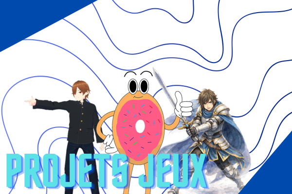
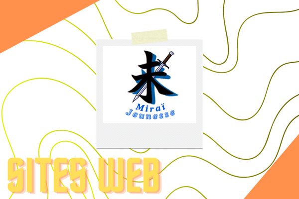
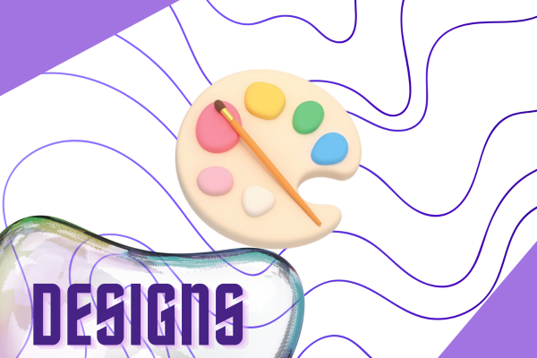

🎯 Projet professionnel
Je souhaite poursuivre des études supérieures en informatique afin de développer des compétences solides en programmation et développement logiciel.
💻 Projets

Projets de jeux vidéo
Différents projets de jeux réalisés grâce à des moteurs de jeux divers.
Python • Javascript • Autre
Sites web
Création de pages web en HTML/CSS, pour plusieurs projets tel qu'une association jeunesse, ou encore pour des jeux-vidéo.
HTML • CSS • Javascript
Designs
Réalisations visuelles avec divers logiciels.
Affinity • Canva • Paint.net🧠 Compétences
- Python (bases solides)
- Autonomie et curiosité
- Motivation pour l'informatique
⭐ Centres d'intérêt
Programmation, jeux vidéo, technologies, musique et arts visuels.